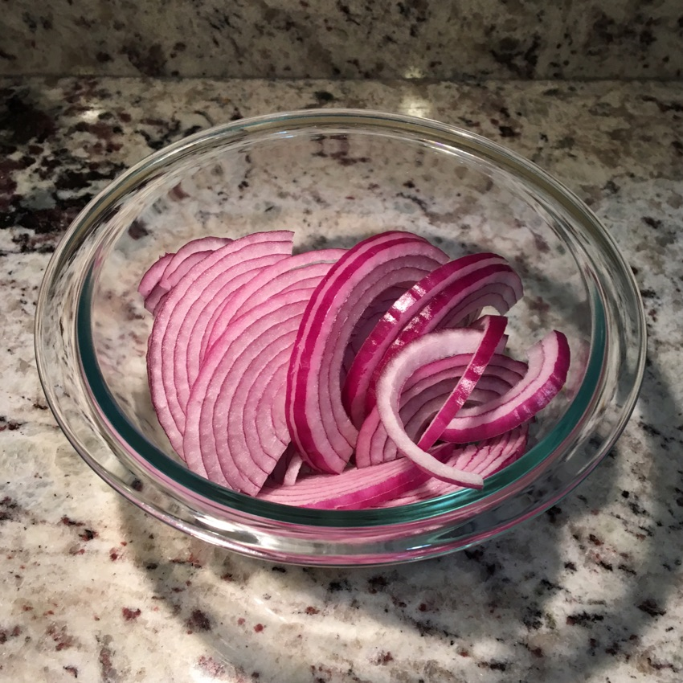
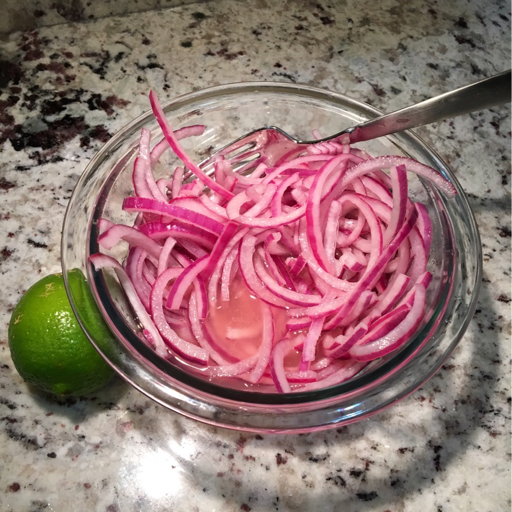
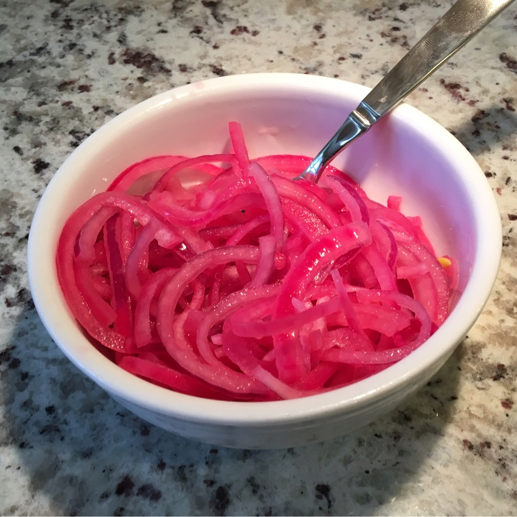

HOW TO MAKE YOUR TACOS 62% BETTER
This is how you make Cebolla en Escabeche (sometimes called Cebollita), the beautiful, super simple, mild “pickled” red onion they serve at street side taco stands in Mexico.
-

Cut a red onion in half, slice it thin, and put it in a bowl. Pour boiling water to cover the onion. Count to ten, then immediately drain off the water.
This makes the onions a bit softer and takes a bit of the edge off.
-

Pour 1/2 to 3/4 cup of lime juice over the onions. Add a teaspoon and a half of salt. Toss.
-

Cover and refrigerate for a couple of hours or longer (they'll keep beautifully for a week).
-
Ta da! Cebolla en Escabeche. A 💯 topping for street tacos, fajitas, taco salad, enchiladas, nachos or whatever else sounds good.